ADN SALSA es una comunidad que conecta personas alrededor de la cultura salsera, creando pertenencia y una identidad compartida. A partir de ahí, genera experiencias que van más allá de la música, integrando ocio, networking y crecimiento dentro del movimiento. Sus canales —redes sociales, eventos, emisora y contenido audiovisual— amplifican esta visión y la convierten en una plataforma real de impacto.
ÚNETE AHORAADN SALSA CLUB es una comunidad privada creada en Madrid que reúne a personas conectadas por una misma pasión: la salsa como cultura, identidad y forma de vida. Nacemos con el propósito de unir a salseros, artistas, profesionales y amantes de la cultura en un espacio donde la salsa se vive en todas sus dimensiones: social, cultural y empresarial. No somos solo fiesta; somos unión, cultura y proyección. Creemos en una salsa que evoluciona, que conecta generaciones y que abre oportunidades reales. Aquí no solo vienes a bailar, formas parte de un movimiento que apenas comienza.
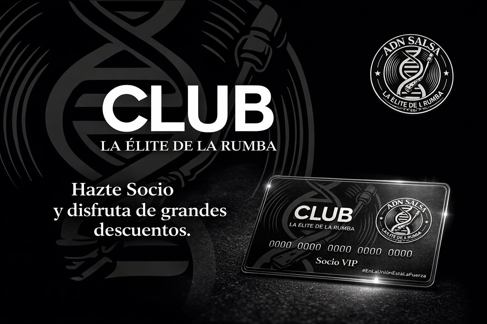
Formar parte de ADN SALSA CLUB no es solo pertenecer a una comunidad. Es acceder a experiencias, conexiones y a un modelo donde el crecimiento colectivo también genera valor económico para sus miembros. Nuestros socios disfrutan de beneficios diseñados para vivir la salsa en todas sus dimensiones: social, cultural y profesional. ADN SALSA CLUB no es solo una comunidad de consumo, es una comunidad que genera valor. Los socios forman parte de un modelo donde los resultados económicos derivados de actividades, alianzas y eventos pueden ser compartidos, fomentando un crecimiento colectivo y sostenible. Esto convierte al club en un espacio donde, además de disfrutar, también puedes participar en el desarrollo y la proyección económica del proyecto. Formar parte de ADN SALSA CLUB es estar dentro de la comunidad, dentro del movimiento y dentro de una visión. Aquí no solo disfrutas la experiencia. Aquí también formas parte del crecimiento.
Participa en los eventos del club con prioridad, condiciones especiales y experiencias exclusivas.
Accede a encuentros exclusivos: sesiones especiales, actividades culturales, networking y experiencias diseñadas por ADN SALSA.
Beneficios directos en locales, restaurantes, marcas y negocios aliados al club.
Conecta con artistas, empresarios, profesionales y miembros con visión, generando oportunidades reales dentro de la comunidad.
Forma parte activa en iniciativas culturales, eventos, colaboraciones y desarrollo del ecosistema ADN SALSA.
Si eres marca, artista o profesional, el club te ofrece exposición directa dentro de un entorno segmentado y activo.
Accede antes que nadie a eventos, alianzas, beneficios y novedades del club.
Cultura y rumba. Energía y conexión. En ADN SALSA CLUB no hacemos eventos… creamos experiencias que se viven, se sienten y se recuerdan. Desde encuentros culturales, networking y actividades sociales durante el día, hasta noches cargadas de ritmo, baile y emoción… todo forma parte de un mismo movimiento. Aquí vienes a desconectar, a conectar, a compartir… a rodearte de personas que vibran en la misma frecuencia. No es solo bailar. No es solo asistir. Es ser parte. Es vivir la salsa en todos sus niveles. Esto es ADN SALSA CLUB.
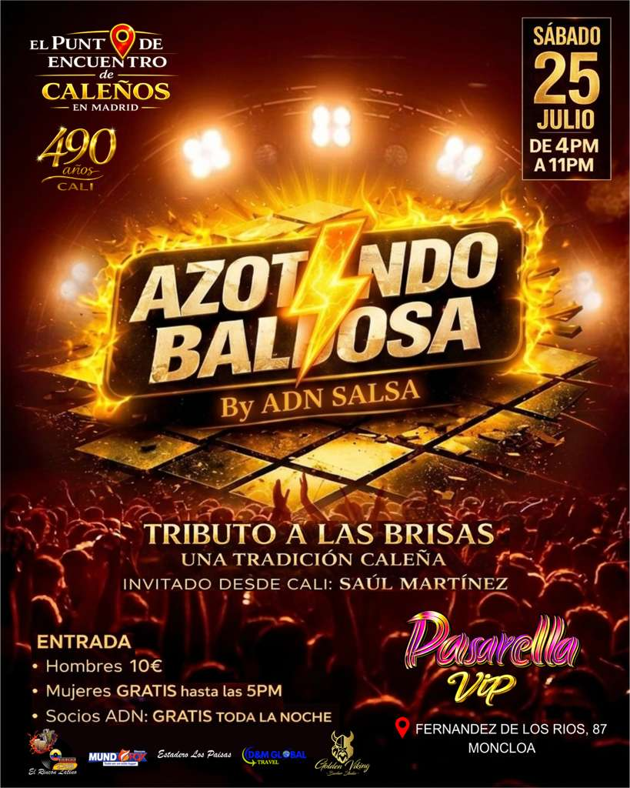
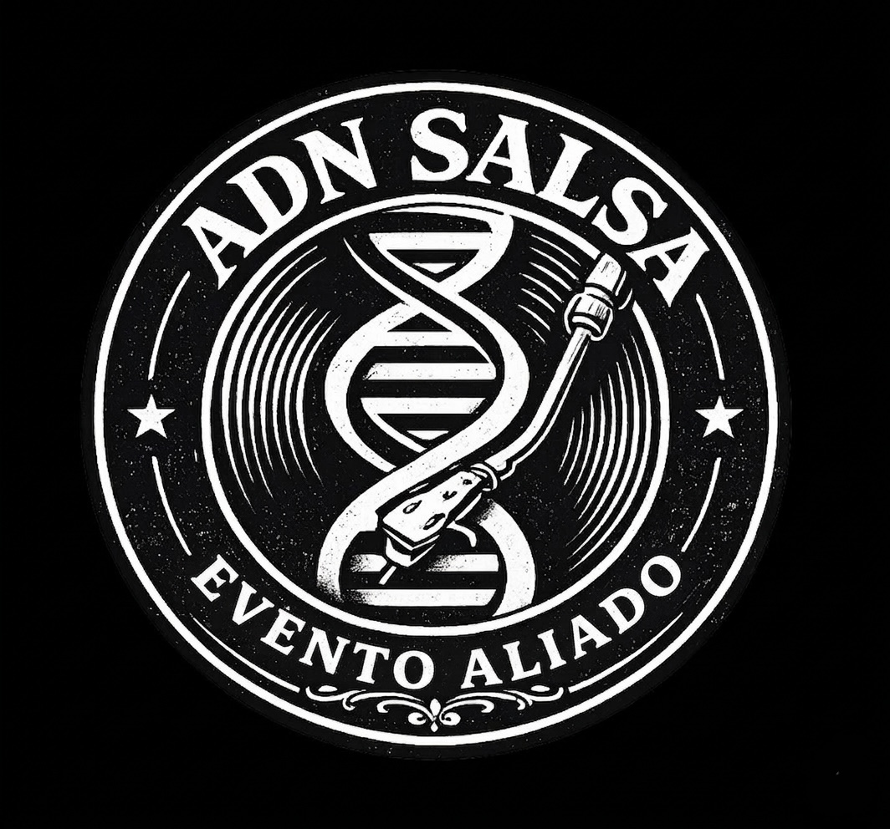
ADN SALSA CLUB no camina solo. Crecemos en red. Los Eventos Aliados son encuentros, fiestas y espacios que comparten nuestra esencia y forman parte del ecosistema ADN SALSA. Seleccionamos y respaldamos eventos que aportan valor a la comunidad, garantizando calidad, ambiente y conexión real. Aquí no solo asistes a más eventos… accedes a una red de experiencias conectadas entre sí. Eventos donde nuestros socios tienen presencia, beneficios y reconocimiento dentro de un movimiento que sigue creciendo. Un solo club. Múltiples escenarios. Una misma esencia.
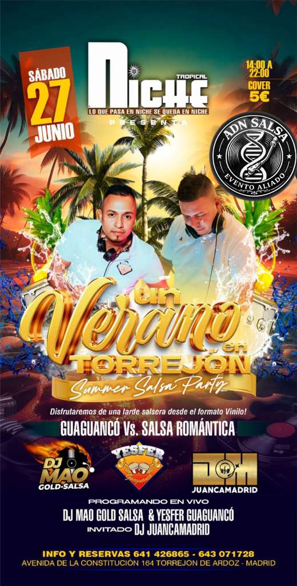
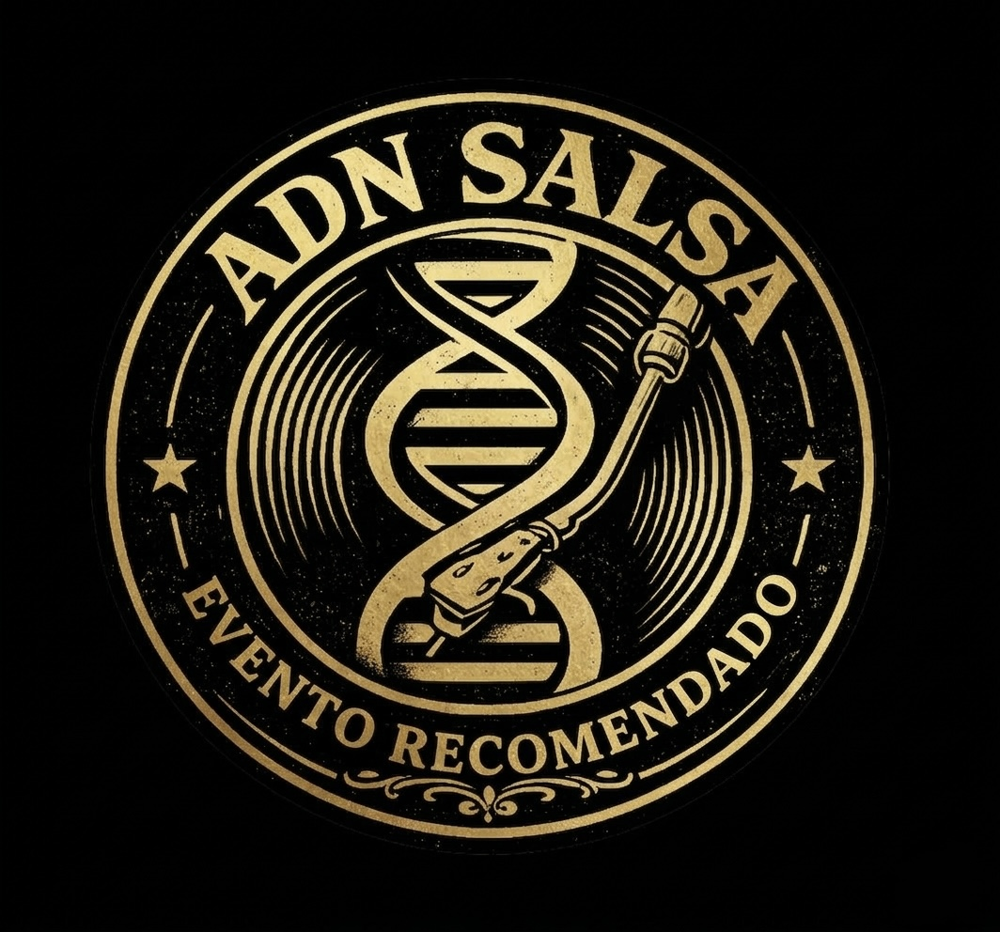
Los Eventos Recomendados de ADN SALSA CLUB representan una selección de experiencias que cuentan con nuestro respaldo, presencia y capacidad de convocatoria. Son eventos que confían en nuestra comunidad, en nuestra imagen y en nuestra fuerza de difusión para amplificar su impacto. Cuando ADN SALSA recomienda un evento, no es casualidad: Es una decisión estratégica. Participamos activamente en su promoción, generamos visibilidad real y movilizamos nuestra comunidad para garantizar un entorno dinámico, conectado y de alto nivel. Para nuestros socios esto se traduce en acceso a eventos con mayor proyección, mejor ambiente y experiencias cuidadosamente seleccionadas. Para los organizadores significa contar con una plataforma que aporta posicionamiento, asistencia y presencia. Si deseas que ADN SALSA impulse tu evento, convoque público y forme parte activa de su promoción, ponemos a tu disposición nuestros servicios de difusión y activación profesional.
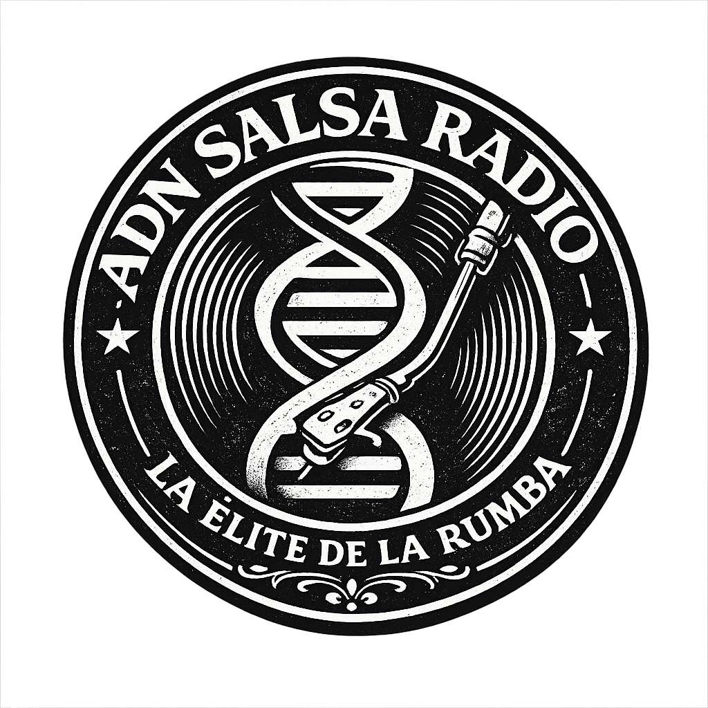
ADN SALSA CLUB cuenta con su propia emisora, un espacio donde la música no se detiene. Transmitimos 24 horas al día, 7 días a la semana, 365 días al año, llevando la esencia de la salsa a cualquier lugar, en cualquier momento. Nuestra programación combina una selección musical continua con contenidos exclusivos de nuestros DJs que forman parte activa del club. Además, ofrecemos espacios publicitarios para marcas y negocios que quieran posicionarse dentro de nuestra audiencia segmentada, activa y vinculada al mundo de la salsa. Conéctate, escucha y forma parte de la experiencia.
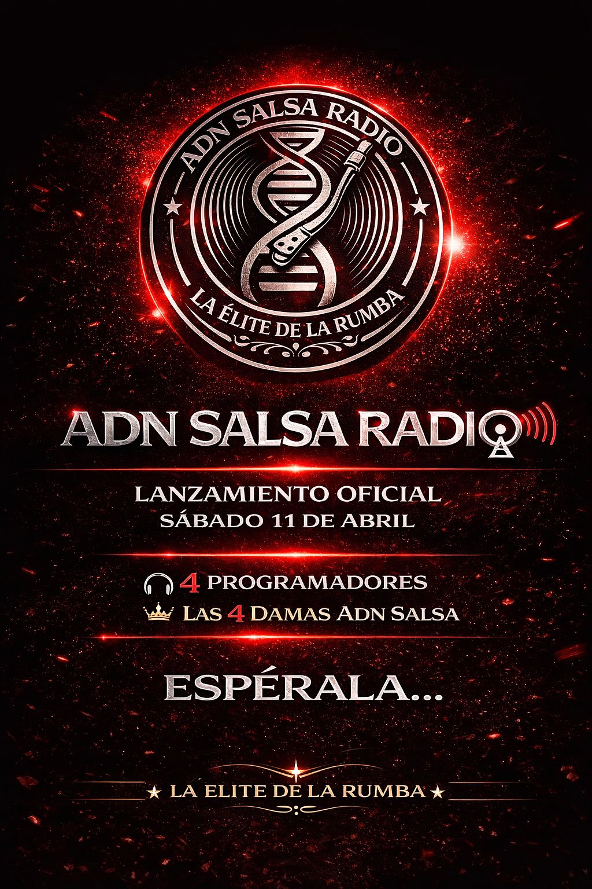
El canal de YouTube de ADN SALSA CLUB es el espacio donde mostramos lo que somos: eventos, experiencias, contenido cultural y la energía real del movimiento ADN SALSA. A través de nuestro contenido visual, damos visibilidad estratégica a marcas, negocios y aliados mediante integración de logos y menciones, conectándolos de manera directa, auténtica y efectiva con una audiencia real. Aquí no solo se ve... se vive la salsa en toda su intensidad. Forma parte de lo que está pasando, suscríbete a nuestro canal o consulta nuestras opciones de patrocinio audiovisual.
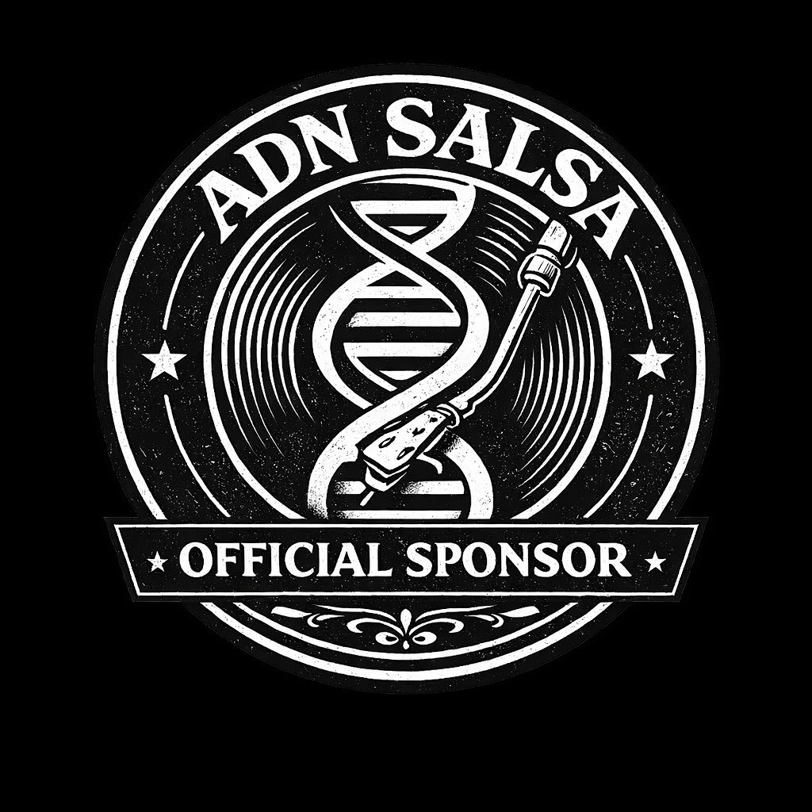
ADN SALSA CLUB es mucho más que una comunidad: es un punto de conexión donde las marcas no solo se muestran, sino que se relacionan, colaboran y crecen juntas. Reunimos a un público activo, segmentado y con capacidad de decisión, pero además, creamos un entorno donde los propios patrocinadores pueden generar alianzas estratégicas entre ellos. Aquí no vienes solo a tener visibilidad, vienes a formar parte de una red. Impulsamos la conexión entre patrocinadores, facilitando relaciones que pueden traducirse en colaboraciones, acuerdos comerciales y proyectos conjuntos. Nuestros aliados no compiten entre sí: se complementan, se recomiendan y se apoyan. A nuestros aliados les ofrecemos visibilidad en eventos y experiencias del club, presencia en nuestros canales digitales, integración en activaciones de marca y participación en un ecosistema donde surgen verdaderas oportunidades de negocio. Más que patrocinio, somos una comunidad empresarial. Construimos relaciones a largo plazo, donde nuestros patrocinadores forman parte activa del proyecto. Si tu marca busca algo más que publicidad, si busca conexiones reales y crecimiento compartido, este es tu lugar.
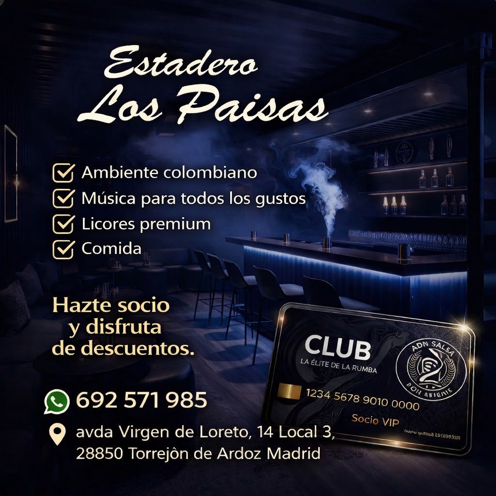
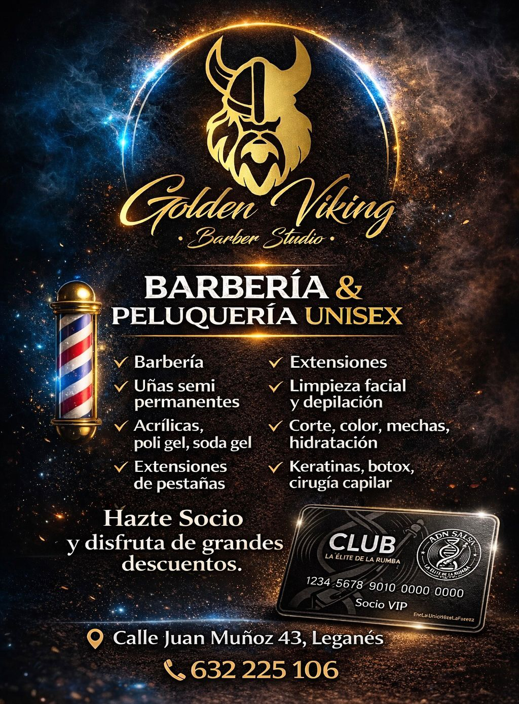
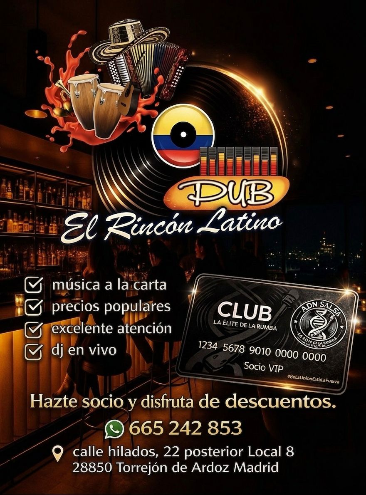
Porque conectas directamente con una comunidad real y en movimiento.
Porque posicionas tu marca dentro de un entorno exclusivo, vinculado a la cultura, el estilo de vida y la experiencia.
Porque participas en eventos y acciones donde el impacto es directo.